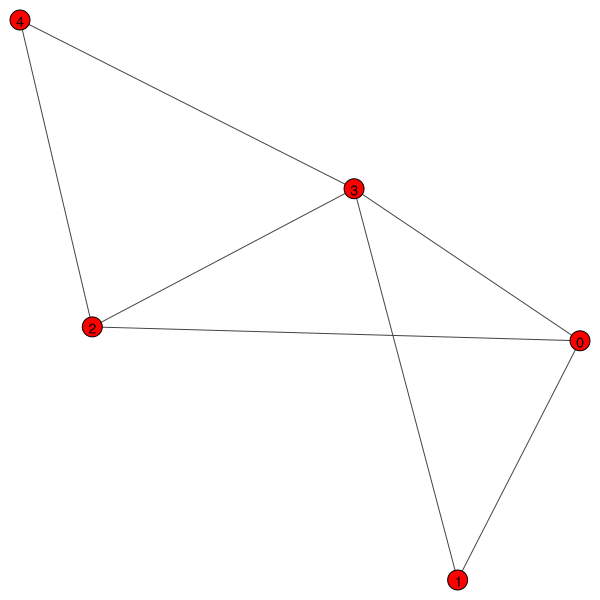
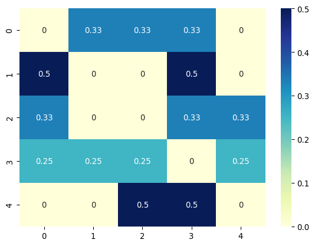
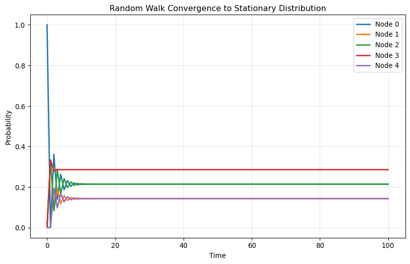
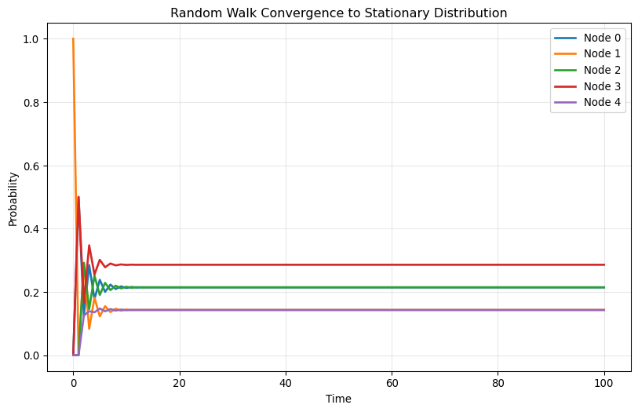
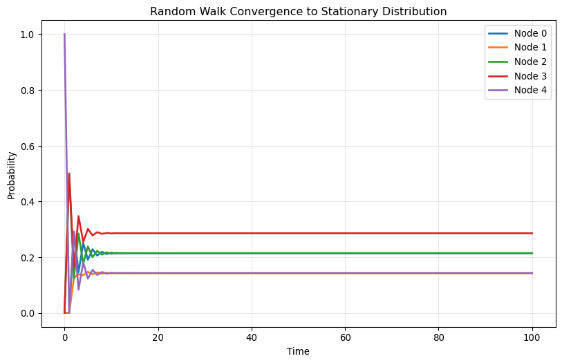
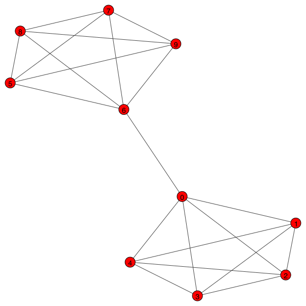
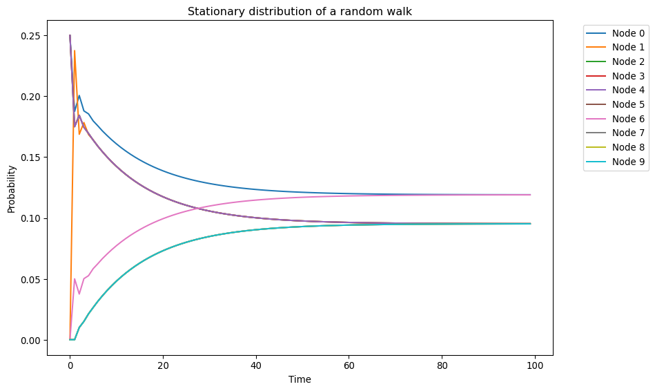
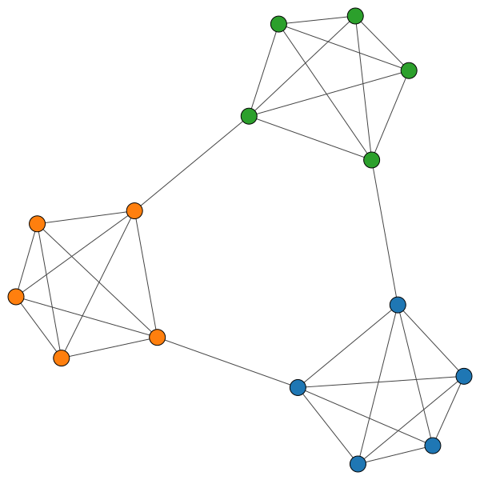
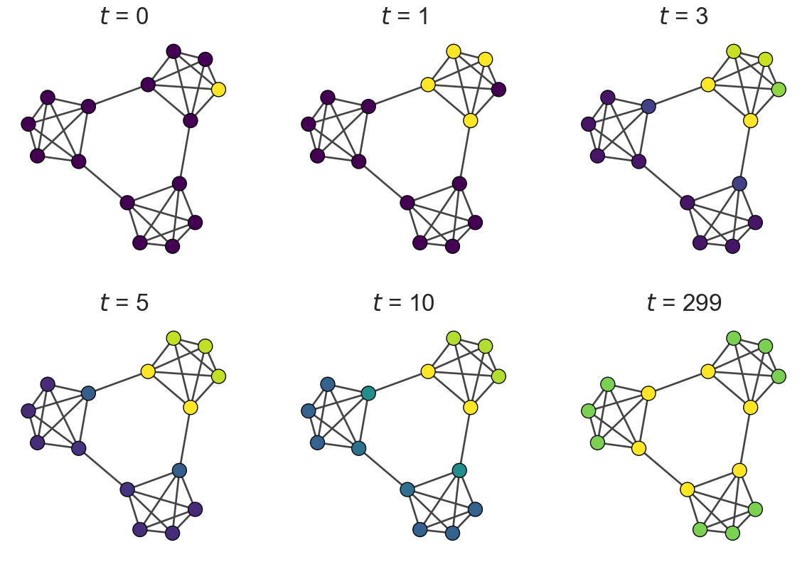

import numpy as np
import igraph
g = igraph.Graph()
g.add_vertices([0, 1, 2, 3, 4])
g.add_edges([(0, 1), (0, 2), (0, 3), (1, 3), (2, 3), (2, 4), (3, 4)])
igraph.plot(g, vertex_size=20, vertex_label=g.vs["name"])
Sadamori Kojaku
September 29, 2025
In the previous section, we learned the theoretical foundations of random walks. Now we’ll implement these concepts in Python and explore their practical applications for network analysis.
Recall that a random walk is a process where we: 1. Start at a node i 2. Randomly choose an edge to traverse to a neighbor node j 3. Repeat until we’ve taken T steps
Let’s see how this simple process can reveal deep insights about network structure.
We’ll start by implementing random walks on a simple graph of five nodes.
A random walk is characterized by the transition probabilities between nodes:
P_{ij} = \frac{A_{ij}}{k_i}
Let’s compute and visualize the transition probability matrix \mathbf{P}:
A = g.get_adjacency_sparse().toarray()
k = np.array(g.degree())
n_nodes = g.vcount()
# A simple but inefficient way to compute P
P = np.zeros((n_nodes, n_nodes))
for i in range(n_nodes):
for j in range(n_nodes):
if k[i] > 0:
P[i, j] = A[i, j] / k[i]
else:
P[i, j] = 0
# Alternative, more efficient way to compute P
P = A / k[:, np.newaxis]
# or even more efficiently
P = np.einsum("ij,i->ij", A, 1 / k)Transition probability matrix:
[[0. 0.33333333 0.33333333 0.33333333 0. ]
[0.5 0. 0. 0.5 0. ]
[0.33333333 0. 0. 0.33333333 0.33333333]
[0.25 0.25 0.25 0. 0.25 ]
[0. 0. 0.5 0.5 0. ]]import matplotlib.pyplot as plt
import seaborn as sns
sns.heatmap(P, annot=True, cmap="YlGnBu")
plt.show()
Each row and column of \mathbf{P} corresponds to a node, with entries representing the transition probabilities from the row node to the column node.
Now let’s simulate a random walk step by step. We represent the position of the walker using a vector \mathbf{x} with five elements, where we mark the current node with 1 and others as 0:
Initial position of the walker:
[1 0 0 0 0]This vector representation lets us compute transition probabilities to other nodes:
\mathbf{x} \mathbf{P}
Transition probabilities from current position:
[0. 0.33333333 0.33333333 0.33333333 0. ]We can then draw the next node based on these probabilities:
Write the following function to simulate the random walk for a given number of steps and return the x for each step:
def random_walk(A, n_steps):
"""
Simulate the random walk on a graph with adjacency matrix A.
Args:
A (np.ndarray): The adjacency matrix of the graph.
n_steps (int): The number of steps to simulate.
Returns:
np.ndarray: The position of the walker after each step.
"""
k = np.sum(A, axis=1)
P = A / k[:, np.newaxis]
n_nodes = A.shape[0]
# Initialize position
x = np.zeros(n_nodes)
x[0] = 1 # Start at node 0
positions = [x.copy()]
for step in range(n_steps):
probs = x @ P
next_node = ... # fill in the missing code
x[:] = 0
x[next_node] = 1
positions.append(x.copy())
return np.array(positions)
# Test the function
walk_positions = random_walk(A, 10)
print("Walker positions over 10 steps:")
print(walk_positions)What is the expected position of the walker after multiple steps? For the first step from initial position \mathbf{x}(0):
\mathbb{E}[\mathbf{x}(1)] = \mathbf{x}(0) \mathbf{P}
Expected position after one step:
[0. 0.33333333 0.33333333 0.33333333 0. ]For the second step:
\mathbb{E}[\mathbf{x}(2)] = \mathbf{x}(0) \mathbf{P}^2
Expected position after two steps:
[0.36111111 0.08333333 0.08333333 0.27777778 0.19444444]In general, the expected position at time t is:
\mathbb{E}[\mathbf{x}(t)] = \mathbf{x}(0) \mathbf{P}^t
Write a function to compute the expected position of the walker at time t:
def expected_position(A, x_0, t):
"""
Compute the expected position of the walker at time t.
Args:
A (np.ndarray): The adjacency matrix of the graph.
x_0 (np.ndarray): The initial position of the walker.
t (int): The number of steps to simulate.
Returns:
np.ndarray: The expected position at time t.
"""
k = np.sum(A, axis=1)
P = A / k[:, np.newaxis]
# Compute P^t
P_t = ... # fill in the missing code
return x_0 @ P_t
# Test the function
x_0 = np.array([1, 0, 0, 0, 0])
for t in [1, 2, 5, 10]:
x_t = expected_position(A, x_0, t)
print(f"Expected position at time {t}: {x_t}")Plot each element of \mathbf{x}(t) as a function of t for t=0,1,2,\ldots, 100. Try different initial positions and compare the results!
import matplotlib.pyplot as plt
import seaborn as sns
def plot_convergence(A, x_0, max_t=100):
"""Plot the convergence to stationary distribution."""
k = np.sum(A, axis=1)
P = A / k[:, np.newaxis]
n_nodes = A.shape[0]
# Compute expected positions over time
positions = []
x_t = x_0.copy()
positions.append(x_t.copy())
for t in range(max_t):
x_t = x_t @ P
positions.append(x_t.copy())
positions = np.array(positions)
# Plot
fig, ax = plt.subplots(figsize=(10, 6))
for i in range(n_nodes):
ax.plot(range(max_t + 1), positions[:, i], label=f"Node {i}", linewidth=2)
ax.set_xlabel("Time")
ax.set_ylabel("Probability")
ax.set_title("Random Walk Convergence to Stationary Distribution")
ax.legend()
ax.grid(True, alpha=0.3)
plt.show()
# Test with different starting positions
starting_positions = [
[1, 0, 0, 0, 0],
[0, 1, 0, 0, 0],
[0, 0, 0, 0, 1]
]
for i, x_0 in enumerate(starting_positions):
print(f"\nStarting from node {np.argmax(x_0)}:")
plot_convergence(A, np.array(x_0))
Starting from node 0:
Starting from node 1:
Starting from node 4:
Let’s demonstrate random walks on a more complex network structure.
import igraph as ig
import numpy as np
# Create a network with two communities
edge_list = []
for i in range(5):
for j in range(i+1, 5):
edge_list.append((i, j))
edge_list.append((i+5, j+5))
edge_list.append((0, 6))
g = ig.Graph(edge_list)
ig.plot(g, vertex_size=20, vertex_label=np.arange(g.vcount()))
The transition probability matrix \mathbf{P} is:
Let’s compute the stationary distribution using the power method:
import matplotlib.pyplot as plt
import seaborn as sns
x = np.zeros(g.vcount())
x[1] = 1 # Start from node 1
T = 100
xt = []
for t in range(T):
x = x.reshape(1, -1) @ P
xt.append(x)
xt = np.vstack(xt) # Stack the results vertically
fig, ax = plt.subplots(figsize=(10, 6))
palette = sns.color_palette().as_hex()
for i in range(g.vcount()):
sns.lineplot(x=range(T), y=xt[:, i], label=f"Node {i}", ax=ax, color=palette[i % len(palette)])
ax.set_xlabel("Time")
ax.set_ylabel("Probability")
ax.set_title("Stationary distribution of a random walk")
ax.legend(bbox_to_anchor=(1.05, 1), loc='upper left')
plt.tight_layout()
plt.show()
We observe three key features: 1. The distribution oscillates with decaying amplitude before converging 2. Nodes of the same degree converge to the same stationary probability 3. Nodes with higher degree have higher stationary probability
Let’s verify this by comparing with the theoretical stationary distribution:
import pandas as pd
n_edges = np.sum(deg) / 2
expected_stationary_dist = deg / (2 * n_edges)
pd.DataFrame({
"Expected stationary distribution": expected_stationary_dist,
"Observed stationary distribution": xt[-1].flatten()
}).style.format("{:.4f}").set_caption("Comparison of Expected and Observed Stationary Distributions").background_gradient(cmap='cividis', axis=None)| Expected stationary distribution | Observed stationary distribution | |
|---|---|---|
| 0 | 0.1190 | 0.1191 |
| 1 | 0.0952 | 0.0953 |
| 2 | 0.0952 | 0.0953 |
| 3 | 0.0952 | 0.0953 |
| 4 | 0.0952 | 0.0953 |
| 5 | 0.0952 | 0.0952 |
| 6 | 0.1190 | 0.1190 |
| 7 | 0.0952 | 0.0952 |
| 8 | 0.0952 | 0.0952 |
| 9 | 0.0952 | 0.0952 |
Random walks can capture community structure. Let’s explore this with a ring of cliques:
import networkx as nx
import igraph
import numpy as np
import seaborn as sns
import matplotlib.pyplot as plt
n_cliques = 3
n_nodes_per_clique = 5
G = nx.ring_of_cliques(n_cliques, n_nodes_per_clique)
g = igraph.Graph().Adjacency(nx.to_numpy_array(G).tolist()).as_undirected()
membership = np.repeat(np.arange(n_cliques), n_nodes_per_clique)
color_map = [sns.color_palette()[i] for i in membership]
igraph.plot(g, vertex_size=20, vertex_color=color_map)
Let’s compute the expected position over time and visualize how the walker explores communities:
# Plot the network at different time steps
cmap = sns.color_palette("viridis", as_cmap=True)
sns.set_style('white')
sns.set(font_scale=1.2)
sns.set_style('ticks')
fig, axes = plt.subplots(figsize=(15,10), ncols = 3, nrows = 2)
t_list = [0, 1, 3, 5, 10, 299]
for i, t in enumerate(t_list):
igraph.plot(g, vertex_size=20, vertex_color=[cmap(x_list[t][j] / np.max(x_list[t])) for j in range(g.vcount())], target = axes[i//3][i%3])
axes[i//3][i%3].set_title(f"$t$ = {t}", fontsize = 25)
The color intensity represents the probability of the walker being at each node. Notice how: - Initially, the walker is concentrated at the starting node - It gradually diffuses within its community - Only later does it spread to other communities - Eventually, it reaches the stationary distribution
This temporal behavior reveals the community structure!
Let’s demonstrate the spectral analysis of random walks:
# Display eigenvalues
pd.DataFrame({
"Eigenvalue": evals
}).T.style.background_gradient(cmap='cividis', axis = 1).set_caption("Eigenvalues of the normalized adjacency matrix")| 0 | 1 | 2 | 3 | 4 | 5 | 6 | 7 | 8 | 9 | 10 | 11 | 12 | 13 | 14 | |
|---|---|---|---|---|---|---|---|---|---|---|---|---|---|---|---|
| Eigenvalue | -0.400000 | -0.362289 | -0.362289 | -0.250000 | -0.250000 | -0.250000 | -0.250000 | -0.250000 | -0.250000 | -0.100000 | -0.030903 | -0.030903 | 0.893192 | 0.893192 | 1.000000 |
The largest eigenvalue is always 1 for a normalized adjacency matrix. The associated eigenvector gives the stationary distribution.
lambda_2 = -np.sort(-evals)[1] # Second largest eigenvalue
tau = 1 / (1 - lambda_2) # Relaxation time
print(f"The second largest eigenvalue is {lambda_2:.4f}")
print(f"The relaxation time of the random walk is {tau:.4f}")The second largest eigenvalue is 0.8932
The relaxation time of the random walk is 9.3626Let’s verify we can compute multi-step transitions using eigenvalues:
t = 5
x_0 = np.zeros(g.vcount())
x_0[0] = 1
# Method 1: Using eigenvalues and eigenvectors
Q_L = np.diag(1.0/np.sqrt(deg)) @ evecs
Q_R = np.diag(np.sqrt(deg)) @ evecs
x_t_spectral = x_0 @ Q_L @ np.diag(evals**t) @ Q_R.T
# Method 2: Using power iteration
P_matrix = sparse.diags(1/deg) @ g.get_adjacency_sparse()
x_t_power = x_0.copy()
for i in range(t):
x_t_power = x_t_power @ P_matrix
pd.DataFrame({
"Spectral method": x_t_spectral.flatten(),
"Power iteration": x_t_power.flatten()
}).style.background_gradient(cmap='cividis', axis = None).set_caption("Comparison of Spectral and Power Iteration Methods")| Spectral method | Power iteration | |
|---|---|---|
| 0 | 0.138150 | 0.138150 |
| 1 | 0.138670 | 0.138670 |
| 2 | 0.126020 | 0.126020 |
| 3 | 0.126020 | 0.126020 |
| 4 | 0.126020 | 0.126020 |
| 5 | 0.042000 | 0.042000 |
| 6 | 0.026300 | 0.026300 |
| 7 | 0.018400 | 0.018400 |
| 8 | 0.018400 | 0.018400 |
| 9 | 0.018400 | 0.018400 |
| 10 | 0.042000 | 0.042000 |
| 11 | 0.067420 | 0.067420 |
| 12 | 0.037400 | 0.037400 |
| 13 | 0.037400 | 0.037400 |
| 14 | 0.037400 | 0.037400 |
This foundation prepares you to apply random walks to real-world network analysis problems and understand their connections to other network science techniques.
---
title: "Coding - Random Walks"
jupyter: advnetsci
execute:
enabled: true
---
# Random Walks: Implementation and Applications
## Introduction: From Theory to Practice
In the previous section, we learned the theoretical foundations of random walks. Now we'll implement these concepts in Python and explore their practical applications for network analysis.
Recall that a random walk is a process where we:
1. Start at a node $i$
2. Randomly choose an edge to traverse to a neighbor node $j$
3. Repeat until we've taken $T$ steps
Let's see how this simple process can reveal deep insights about network structure.
## Implementing Random Walks in Python
### Setting Up: Simple Graph
We'll start by implementing random walks on a simple graph of five nodes.
```{python}
import numpy as np
import igraph
g = igraph.Graph()
g.add_vertices([0, 1, 2, 3, 4])
g.add_edges([(0, 1), (0, 2), (0, 3), (1, 3), (2, 3), (2, 4), (3, 4)])
igraph.plot(g, vertex_size=20, vertex_label=g.vs["name"])
```
### Computing Transition Probabilities
A random walk is characterized by the transition probabilities between nodes:
$$P_{ij} = \frac{A_{ij}}{k_i}$$
Let's compute and visualize the transition probability matrix $\mathbf{P}$:
```{python}
A = g.get_adjacency_sparse().toarray()
k = np.array(g.degree())
n_nodes = g.vcount()
# A simple but inefficient way to compute P
P = np.zeros((n_nodes, n_nodes))
for i in range(n_nodes):
for j in range(n_nodes):
if k[i] > 0:
P[i, j] = A[i, j] / k[i]
else:
P[i, j] = 0
# Alternative, more efficient way to compute P
P = A / k[:, np.newaxis]
# or even more efficiently
P = np.einsum("ij,i->ij", A, 1 / k)
```
```{python}
print("Transition probability matrix:\n", P)
```
```{python}
import matplotlib.pyplot as plt
import seaborn as sns
sns.heatmap(P, annot=True, cmap="YlGnBu")
plt.show()
```
Each row and column of $\mathbf{P}$ corresponds to a node, with entries representing the transition probabilities from the row node to the column node.
### Simulating Random Walk Steps
Now let's simulate a random walk step by step. We represent the position of the walker using a vector $\mathbf{x}$ with five elements, where we mark the current node with `1` and others as `0`:
```{python}
x = np.array([0, 0, 0, 0, 0])
x[0] = 1
print("Initial position of the walker:\n", x)
```
This vector representation lets us compute transition probabilities to other nodes:
$$\mathbf{x} \mathbf{P}$$
```{python}
probs = x @ P
print("Transition probabilities from current position:\n", probs)
```
We can then draw the next node based on these probabilities:
```{python}
next_node = np.random.choice(n_nodes, p=probs)
x[:] = 0 # zero out the vector
x[next_node] = 1 # set the next node to 1
print("Position after one step:\n", x)
```
### Exercise 01
Write the following function to simulate the random walk for a given number of steps and return the $x$ for each step:
```python
def random_walk(A, n_steps):
"""
Simulate the random walk on a graph with adjacency matrix A.
Args:
A (np.ndarray): The adjacency matrix of the graph.
n_steps (int): The number of steps to simulate.
Returns:
np.ndarray: The position of the walker after each step.
"""
k = np.sum(A, axis=1)
P = A / k[:, np.newaxis]
n_nodes = A.shape[0]
# Initialize position
x = np.zeros(n_nodes)
x[0] = 1 # Start at node 0
positions = [x.copy()]
for step in range(n_steps):
probs = x @ P
next_node = ... # fill in the missing code
x[:] = 0
x[next_node] = 1
positions.append(x.copy())
return np.array(positions)
# Test the function
walk_positions = random_walk(A, 10)
print("Walker positions over 10 steps:")
print(walk_positions)
```
## Expected Behavior of Random Walks
### Computing Expected Positions
What is the expected position of the walker after multiple steps? For the first step from initial position $\mathbf{x}(0)$:
$$\mathbb{E}[\mathbf{x}(1)] = \mathbf{x}(0) \mathbf{P}$$
```{python}
x_0 = np.array([1, 0, 0, 0, 0])
x_1 = x_0 @ P
print("Expected position after one step:\n", x_1)
```
For the second step:
$$\mathbb{E}[\mathbf{x}(2)] = \mathbf{x}(0) \mathbf{P}^2$$
```{python}
x_2 = x_1 @ P
print("Expected position after two steps:\n", x_2)
```
In general, the expected position at time $t$ is:
$$\mathbb{E}[\mathbf{x}(t)] = \mathbf{x}(0) \mathbf{P}^t$$
### Exercise 02
Write a function to compute the expected position of the walker at time $t$:
```python
def expected_position(A, x_0, t):
"""
Compute the expected position of the walker at time t.
Args:
A (np.ndarray): The adjacency matrix of the graph.
x_0 (np.ndarray): The initial position of the walker.
t (int): The number of steps to simulate.
Returns:
np.ndarray: The expected position at time t.
"""
k = np.sum(A, axis=1)
P = A / k[:, np.newaxis]
# Compute P^t
P_t = ... # fill in the missing code
return x_0 @ P_t
# Test the function
x_0 = np.array([1, 0, 0, 0, 0])
for t in [1, 2, 5, 10]:
x_t = expected_position(A, x_0, t)
print(f"Expected position at time {t}: {x_t}")
```
### Exercise 03
Plot each element of $\mathbf{x}(t)$ as a function of $t$ for $t=0,1,2,\ldots, 100$. Try different initial positions and compare the results!
```{python}
import matplotlib.pyplot as plt
import seaborn as sns
def plot_convergence(A, x_0, max_t=100):
"""Plot the convergence to stationary distribution."""
k = np.sum(A, axis=1)
P = A / k[:, np.newaxis]
n_nodes = A.shape[0]
# Compute expected positions over time
positions = []
x_t = x_0.copy()
positions.append(x_t.copy())
for t in range(max_t):
x_t = x_t @ P
positions.append(x_t.copy())
positions = np.array(positions)
# Plot
fig, ax = plt.subplots(figsize=(10, 6))
for i in range(n_nodes):
ax.plot(range(max_t + 1), positions[:, i], label=f"Node {i}", linewidth=2)
ax.set_xlabel("Time")
ax.set_ylabel("Probability")
ax.set_title("Random Walk Convergence to Stationary Distribution")
ax.legend()
ax.grid(True, alpha=0.3)
plt.show()
# Test with different starting positions
starting_positions = [
[1, 0, 0, 0, 0],
[0, 1, 0, 0, 0],
[0, 0, 0, 0, 1]
]
for i, x_0 in enumerate(starting_positions):
print(f"\nStarting from node {np.argmax(x_0)}:")
plot_convergence(A, np.array(x_0))
```
## Practical Demonstration with Real Networks
Let's demonstrate random walks on a more complex network structure.
```{python}
import igraph as ig
import numpy as np
# Create a network with two communities
edge_list = []
for i in range(5):
for j in range(i+1, 5):
edge_list.append((i, j))
edge_list.append((i+5, j+5))
edge_list.append((0, 6))
g = ig.Graph(edge_list)
ig.plot(g, vertex_size=20, vertex_label=np.arange(g.vcount()))
```
### Computing Stationary Distribution
The transition probability matrix $\mathbf{P}$ is:
```{python}
import scipy.sparse as sparse
A = g.get_adjacency_sparse()
deg = np.array(A.sum(axis=1)).flatten()
Dinv = sparse.diags(1/deg)
P = Dinv @ A
```
Let's compute the stationary distribution using the power method:
```{python}
import matplotlib.pyplot as plt
import seaborn as sns
x = np.zeros(g.vcount())
x[1] = 1 # Start from node 1
T = 100
xt = []
for t in range(T):
x = x.reshape(1, -1) @ P
xt.append(x)
xt = np.vstack(xt) # Stack the results vertically
fig, ax = plt.subplots(figsize=(10, 6))
palette = sns.color_palette().as_hex()
for i in range(g.vcount()):
sns.lineplot(x=range(T), y=xt[:, i], label=f"Node {i}", ax=ax, color=palette[i % len(palette)])
ax.set_xlabel("Time")
ax.set_ylabel("Probability")
ax.set_title("Stationary distribution of a random walk")
ax.legend(bbox_to_anchor=(1.05, 1), loc='upper left')
plt.tight_layout()
plt.show()
```
We observe three key features:
1. The distribution oscillates with decaying amplitude before converging
2. Nodes of the same degree converge to the same stationary probability
3. Nodes with higher degree have higher stationary probability
Let's verify this by comparing with the theoretical stationary distribution:
```{python}
import pandas as pd
n_edges = np.sum(deg) / 2
expected_stationary_dist = deg / (2 * n_edges)
pd.DataFrame({
"Expected stationary distribution": expected_stationary_dist,
"Observed stationary distribution": xt[-1].flatten()
}).style.format("{:.4f}").set_caption("Comparison of Expected and Observed Stationary Distributions").background_gradient(cmap='cividis', axis=None)
```
## Community Structure Detection
Random walks can capture community structure. Let's explore this with a ring of cliques:
```{python}
import networkx as nx
import igraph
import numpy as np
import seaborn as sns
import matplotlib.pyplot as plt
n_cliques = 3
n_nodes_per_clique = 5
G = nx.ring_of_cliques(n_cliques, n_nodes_per_clique)
g = igraph.Graph().Adjacency(nx.to_numpy_array(G).tolist()).as_undirected()
membership = np.repeat(np.arange(n_cliques), n_nodes_per_clique)
color_map = [sns.color_palette()[i] for i in membership]
igraph.plot(g, vertex_size=20, vertex_color=color_map)
```
### Visualizing Random Walk Dynamics
Let's compute the expected position over time and visualize how the walker explores communities:
```{python}
from scipy import sparse
# Get the adjacency matrix and degree
A = g.get_adjacency_sparse()
k = np.array(g.degree())
# Compute the transition matrix efficiently using scipy.sparse
P = sparse.diags(1 / k) @ A
```
```{python}
# Compute the expected position from node 2 over 300 steps
x_t = np.zeros(g.vcount())
x_t[2] = 1
x_list = [x_t]
for t in range(300):
x_t = x_t @ P
x_list.append(x_t)
x_list = np.array(x_list)
```
```{python}
# Plot the network at different time steps
cmap = sns.color_palette("viridis", as_cmap=True)
sns.set_style('white')
sns.set(font_scale=1.2)
sns.set_style('ticks')
fig, axes = plt.subplots(figsize=(15,10), ncols = 3, nrows = 2)
t_list = [0, 1, 3, 5, 10, 299]
for i, t in enumerate(t_list):
igraph.plot(g, vertex_size=20, vertex_color=[cmap(x_list[t][j] / np.max(x_list[t])) for j in range(g.vcount())], target = axes[i//3][i%3])
axes[i//3][i%3].set_title(f"$t$ = {t}", fontsize = 25)
```
The color intensity represents the probability of the walker being at each node. Notice how:
- Initially, the walker is concentrated at the starting node
- It gradually diffuses within its community
- Only later does it spread to other communities
- Eventually, it reaches the stationary distribution
This temporal behavior reveals the community structure!
## Mixing Time and Spectral Analysis
### Computing Eigenvalues and Mixing Time
Let's demonstrate the spectral analysis of random walks:
```{python}
# Using the two-clique network from before
A_norm = g.get_adjacency_sparse()
deg = np.array(A_norm.sum(axis=1)).flatten()
# Normalized adjacency matrix
Dinv_sqrt = sparse.diags(1.0/np.sqrt(deg))
A_norm = Dinv_sqrt @ A_norm @ Dinv_sqrt
```
```{python}
# Compute eigenvalues and eigenvectors
evals, evecs = np.linalg.eigh(A_norm.toarray())
```
```{python}
# Display eigenvalues
pd.DataFrame({
"Eigenvalue": evals
}).T.style.background_gradient(cmap='cividis', axis = 1).set_caption("Eigenvalues of the normalized adjacency matrix")
```
The largest eigenvalue is always 1 for a normalized adjacency matrix. The associated eigenvector gives the stationary distribution.
### Relaxation Time
```{python}
lambda_2 = -np.sort(-evals)[1] # Second largest eigenvalue
tau = 1 / (1 - lambda_2) # Relaxation time
print(f"The second largest eigenvalue is {lambda_2:.4f}")
print(f"The relaxation time of the random walk is {tau:.4f}")
```
### Verifying Spectral Decomposition
Let's verify we can compute multi-step transitions using eigenvalues:
```{python}
t = 5
x_0 = np.zeros(g.vcount())
x_0[0] = 1
# Method 1: Using eigenvalues and eigenvectors
Q_L = np.diag(1.0/np.sqrt(deg)) @ evecs
Q_R = np.diag(np.sqrt(deg)) @ evecs
x_t_spectral = x_0 @ Q_L @ np.diag(evals**t) @ Q_R.T
# Method 2: Using power iteration
P_matrix = sparse.diags(1/deg) @ g.get_adjacency_sparse()
x_t_power = x_0.copy()
for i in range(t):
x_t_power = x_t_power @ P_matrix
pd.DataFrame({
"Spectral method": x_t_spectral.flatten(),
"Power iteration": x_t_power.flatten()
}).style.background_gradient(cmap='cividis', axis = None).set_caption("Comparison of Spectral and Power Iteration Methods")
```
### Key Takeaways
- Random walks converge to stationary distributions proportional to node degrees
- Community structure is revealed through short-term vs. long-term behavior
- Spectral properties control convergence speed and mixing times
- Implementation requires careful attention to matrix operations and numerical stability
- Applications span centrality measures, community detection, and network characterization
This foundation prepares you to apply random walks to real-world network analysis problems and understand their connections to other network science techniques.